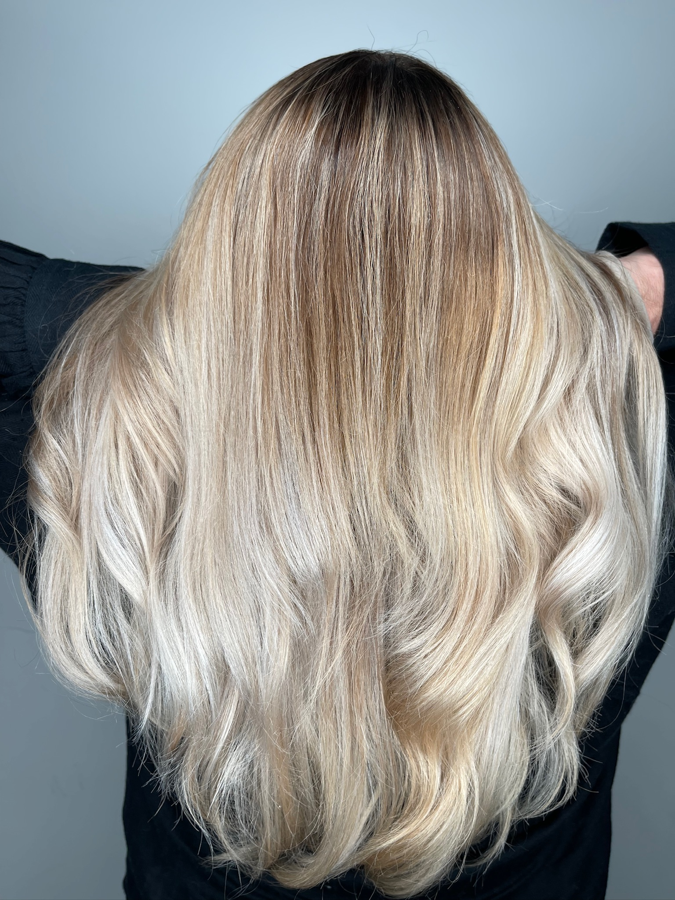
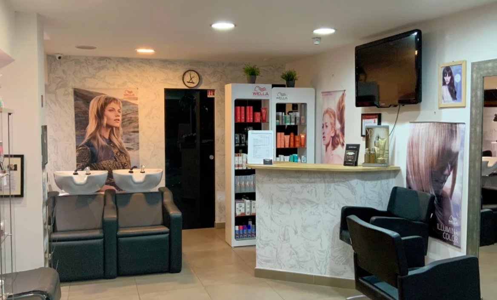
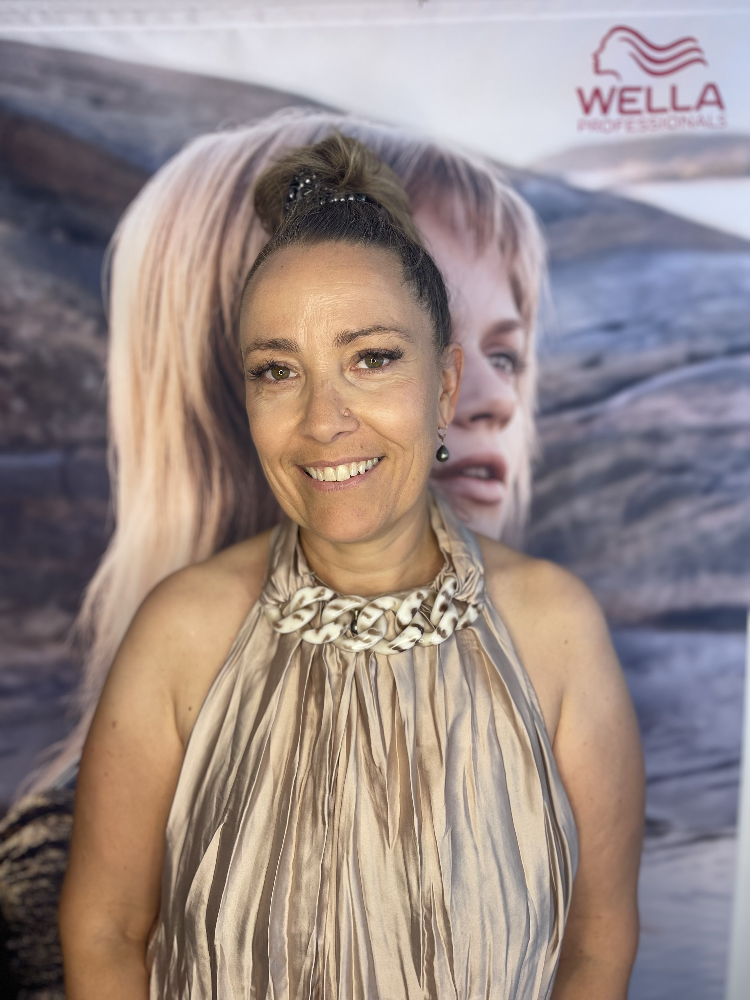
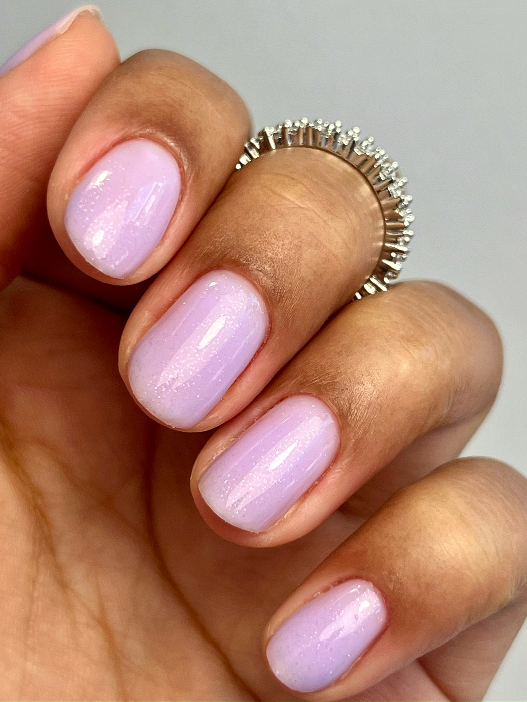
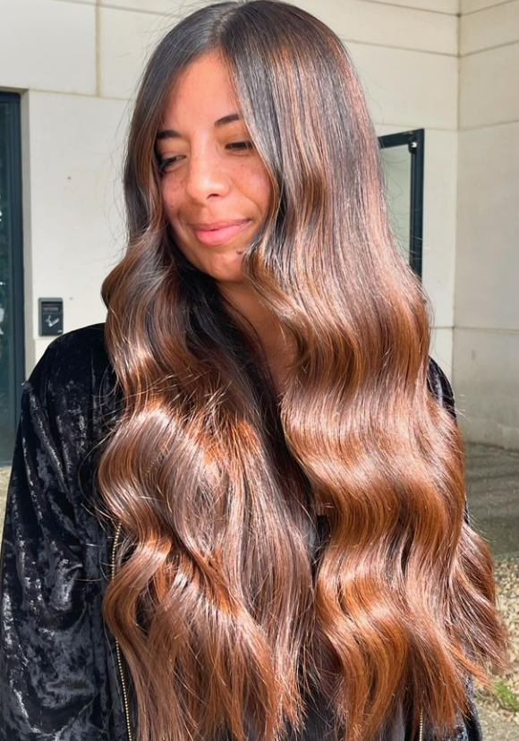
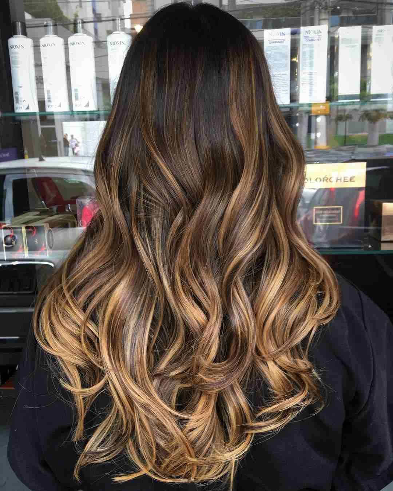
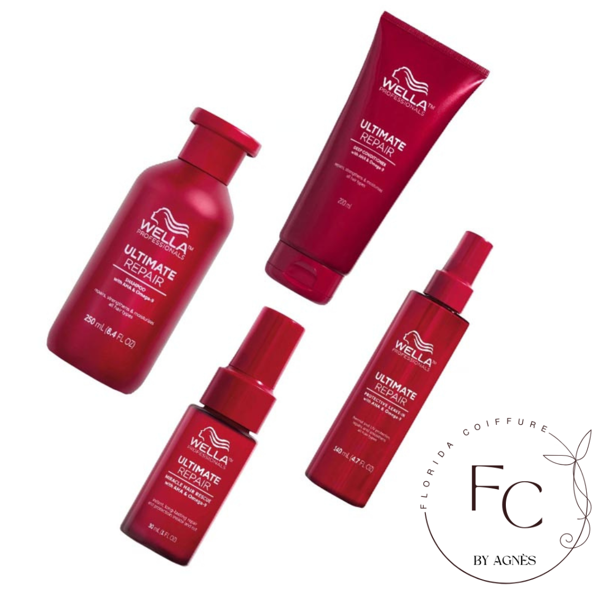
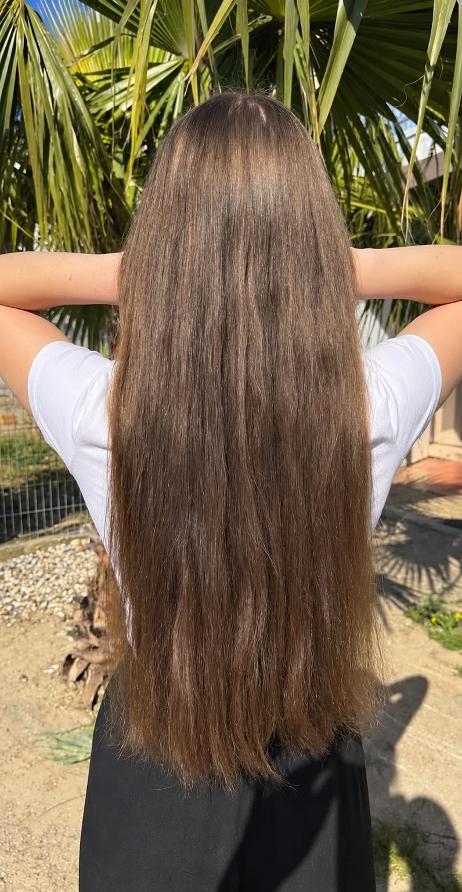
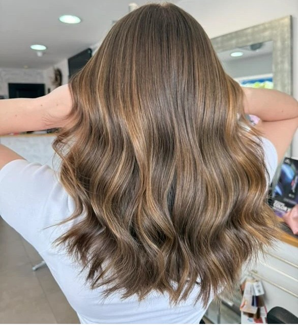

Avec Agnès
Coiffure sur mesure
Coupe Signature, Curly Cut, couleur, balayage, soins experts, lissages ou extensions : chaque projet est abordé avec la même exigence de conseil et de personnalisation.
Découvrir la coiffureMaison de coiffure & onglerie · Le Grau-du-Roi
Florida Coiffure réunit l’expertise capillaire d’Agnès et le savoir-faire ongulaire de Lucy dans un salon semi-privatisé, pensé pour prendre le temps de vous écouter, vous conseiller et créer un résultat qui vous ressemble.
29 Rue Vincent · 30240 Le Grau-du-Roi


La maison
Chaque projet commence par l’écoute. Agnès prend en compte votre histoire capillaire, votre texture, vos habitudes et vos envies pour vous conseiller avec justesse et construire un résultat adapté à vos cheveux.
Florida Coiffure a été pensé comme un salon semi-privatisé où chaque rendez-vous laisse davantage de place au conseil, à l’échange et à l’accompagnement.
Deux expertises
Coiffure ou onglerie, chaque prestation est pensée pour vous proposer un résultat personnalisé, soigné et adapté à vos envies.

Avec Agnès
Coupe Signature, Curly Cut, couleur, balayage, soins experts, lissages ou extensions : chaque projet est abordé avec la même exigence de conseil et de personnalisation.
Découvrir la coiffure
Avec Lucy
Semi-permanent, gainage, rallongement ou nail art : Lucy travaille chaque pose avec précision, en respectant vos envies et l’équilibre de l’ongle naturel.
Découvrir l’onglerieExpertises phares
Chaque prestation répond à un besoin différent. Découvrez son approche, son déroulement et le résultat recherché avant de choisir votre rendez-vous.

Coupe
Une coupe pensée selon votre visage, votre texture, votre densité et votre façon de vous coiffer au quotidien.

Texture
Une prestation dédiée aux cheveux ondulés, bouclés et frisés pour travailler la forme, révéler le mouvement naturel et faciliter l’entretien au quotidien.

Couleur
Un travail de lumière construit selon votre base, votre carnation, votre historique capillaire et le résultat recherché, du plus subtil à la transformation complète.
Vous hésitez entre plusieurs prestations ?
Quelques questions suffisent pour vous orienter vers la famille de prestations la plus adaptée à votre besoin, en coiffure comme en onglerie.
Trouver ma routine
Texture, épaisseur, état des longueurs, techniques, chaleur, calcaire, soleil ou humidité… Répondez à quelques questions pour identifier les besoins prioritaires de vos cheveux et découvrir une sélection de produits adaptée.

Avant / Après
Comparez les deux photos pour observer l’évolution de la coupe, de la lumière et du mouvement.
Voir les transformations

AvantAprèsComparaison : 50% après
Réalisations
Découvrez une sélection de réalisations signées Agnès et Lucy et trouvez l’inspiration pour votre prochain rendez-vous.
Avis clients
Découvrez les avis laissés après leur passage au salon.
Florida Coiffure · Le Grau-du-Roi
Au 29 Rue Vincent, Florida Coiffure vous accueille dans un espace semi-privatisé où chaque rendez-vous privilégie le calme, l’écoute et la qualité de l’accompagnement.
Réservation
Consultez les disponibilités et choisissez le créneau qui vous convient.